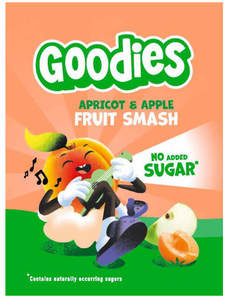

Trade Mark Journal No.2025/014 4 April 2025
UK00004176096 19 March 2025 (5,29,30,32)

- Class 5
- Medical, pharmaceutical and veterinary preparations; sanitary preparations for medical purposes; lotions for pharmaceutical purposes; medicinal oils; medicinal drinks; medicinal infusions; medicinal tea; babies diapers; baby and infant food and drinks; infant and child solid and pureed foods; disinfectants; preparations for destroying vermin; fungicides; herbicides.
- Class 29
- Meat, fish, poultry and game; meat extracts; preserved fruits; dried fruits; cooked fruits; dried vegetables; cooked vegetables; products containing fruits and fruit powders, namely fruit bars and yoghurts, fruit salads, fruit peel, fruit chips and fruit-based snack food; fruit desserts; jellies, jams, compotes; eggs, edible oils and fats; vegetable and fruit based snack foods; fruit puree and pulp, not for drinkable goods; egg products; milk shakes; yoghurts; dairy spreads; cheese spreads; fruit spreads; snack foods consisting principally of meat; snack foods consisting principally of vegetables; snack foods made from eggs; snack foods made from potatoes and wheat (potatoes predominating); fruit based snack food; prepared meals consisting of meat; prepared meals consisting principally of vegetables; prepared meals consisting principally of poultry; prepared meals consisting principally of fish; prepared meals consisting of dairy products; cooked meals consisting principally of meat and vegetables; food made principally from milk; nut based snack foods.
- Class 30
- Coffee, tea, cocoa, sugar, rice, tapioca, sago, artificial coffee; flour and preparations made from cereals, bread, pastry and confectionery, ices; honey, treacle; yeast, baking-powder; salt, mustard; vinegar, sauces (condiments); spices; ice; breakfast cereals, porridge oats, muesli and preparations containing or made from cereals; pasta; rusks; rice and preparations containing or made from rice; preparations made from corn; popcorn; corn, cereal and rice-based snack foods; grain-based snack foods; oat-based snack foods; crackers, bread, biscuits, cakes, cookies and pastry; confectionery; fruit gums; sweets and candy; sauces; desserts; prepared meals consisting principally of corn; prepared meals consisting principally of rice.
- Class 32
- Non-alcoholic beverages; non-alcoholic fruit extracts; non-alcoholic preparations for making beverages; non-alcoholic fruit juice beverages; non-alcoholic honey-based beverages; smoothies; soda water; soft drinks; syrups and other preparations for making beverages; table waters; tomato juice [beverage]; vegetable juices [beverages]; waters [beverages]; whey beverages; cider, non-alcoholic; beers; mineral and aerated waters; fruit beverages and fruit juices.
Organix Brands Limited
Representative: Penningtons Manches Cooper LLP